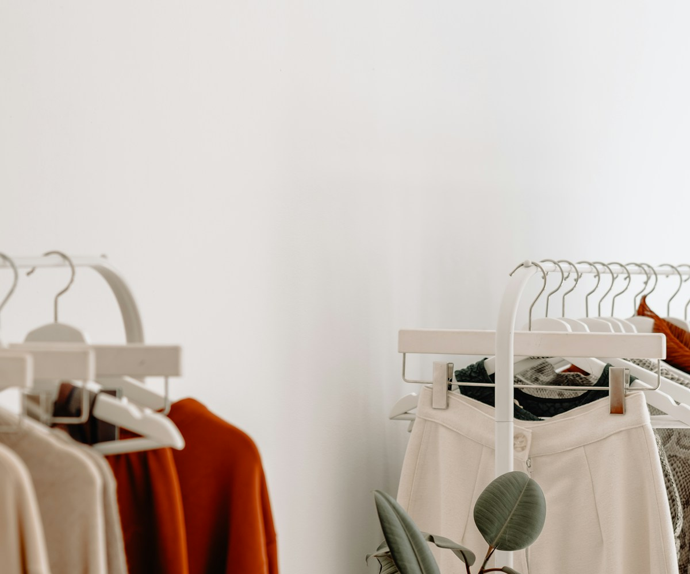
BOLDNESS
브랜드별로 흩어진 프로모션 정보를 한곳에서 탐색하고 비교할 수 있는 반응형 웹 서비스를 기획했습니다. 정보 구조와 사용자 흐름을 설계하고, 검색·필터·정렬부터 관심 브랜드 팔로우, 개별 혜택 저장과 일정 관리까지 이어지는 주요 화면의 UX/UI를 디자인했습니다.
데스크톱·태블릿·모바일 환경에 맞춰 레이아웃과 정보 위계를 조정하고, HTML·CSS·JavaScript를 활용해 실제 웹사이트로 구현했습니다. 서비스 기획부터 UI 디자인, 인터랙션 구현까지 전 과정을 직접 수행하며 다양한 화면 환경에서도 일관된 사용 경험을 완성했습니다.
BACKGROUND
SNS에서 관심 있는 브랜드의 할인이나 이벤트를 발견한 적 있으신가요?
혜택을 확인하기 위해 댓글을 남기고, DM을 확인하고, 다시 외부 링크로 이동해야 하는 경우가 있습니다. 여러 브랜드의 혜택을 비교하려면 이러한 과정을 반복해야 합니다.
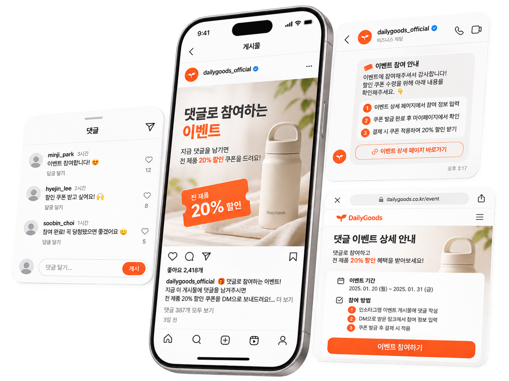
혜택 하나 확인하려는데,
과정은 왜 이렇게 번거로울까요?
PROJECT GOAL
여러 채널을 오가지 않고 관심 있는 혜택을 발견하고 비교하며, 저장한 혜택의 일정까지 관리할 수 있는 서비스를 목표로 했습니다.
여러 브랜드의 혜택을 하나의 공간에서 탐색합니다.
브랜드·혜택·기간·조건을 같은 기준으로 확인합니다.
관심 브랜드와 필요한 혜택을 구분하고, 저장한 혜택의 이용 기간을 확인합니다.
DESIGN CONCEPT
브랜드마다 다른 이미지를 살리고, 혜택·기간·조건은 같은 순서로 읽을 수 있게 정리했습니다.

BOLDNESS
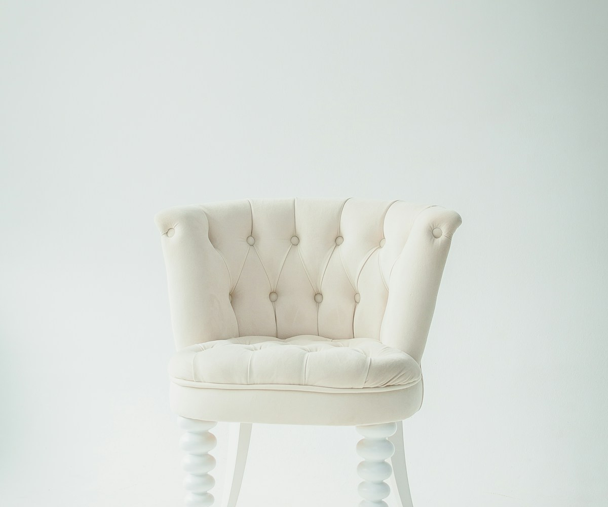
CLARITY
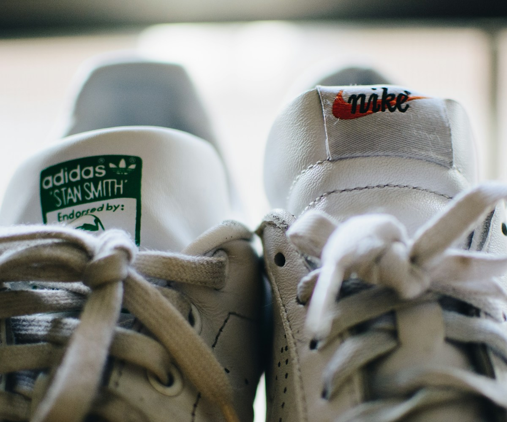
FLEXIBILITY
DESIGN SYSTEM
중립적인 표면과 명확한 타이포그래피로 혜택 정보를 정리하고, 오렌지는 핵심 동작과 상태에 집중했습니다.
| Scale | Size | Weight |
|---|---|---|
| Display | 87.84px | 500 |
| Heading 1 | 64px | 650 |
| Heading 2 | 37.44px | 650 |
| Heading 3 | 30px | 600 |
| Body | 17px | 400 |
| Caption | 13px | 400 |
| Label | 12px | 700 |
서비스 대표 화면에서 측정 · 1440px 기준
브랜드를 발견하고, 나에게 맞는 혜택을 만나는 시작점.
인기·신규·마감 임박을 서로 다른 배열로 보여주고, 저장한 혜택은 개인 캘린더에서 바로 확인할 수 있게 했습니다.
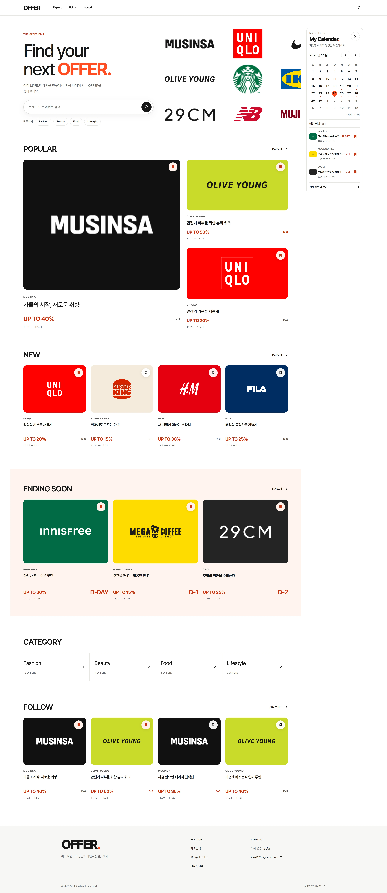
브랜드 로고와 검색창을 나란히 배치했습니다. 로고를 둘러보다가 관심 있는 브랜드나 혜택을 바로 검색할 수 있습니다.
와이드 화면의 여유 공간에서 저장한 혜택의 시작·마감과 날짜별 목록을 확인합니다. 필요할 때 접거나 전체 캘린더로 이동할 수 있습니다.
비대칭 그리드에서 큰 대표 카드와 두 개의 보조 카드로 인기 혜택의 시각적 우선순위를 만들었습니다.
같은 크기의 카드와 일정한 정보 순서로 여러 브랜드의 신규 혜택을 비교합니다.
전체 프로모션 중 마감이 가까운 혜택을 모아 D-DAY와 남은 이용 기간을 표시했습니다.
카테고리 바로가기로 관심 분야의 프로모션에 빠르게 접근합니다.
홈에서도 팔로우한 브랜드의 진행 중 혜택을 확인합니다.
원하는 혜택을 찾는 나만의 탐색 방식.
검색과 탐색 조건을 조합해 후보를 좁히고, 같은 카드 구조에서 서로 다른 브랜드의 혜택을 비교합니다.
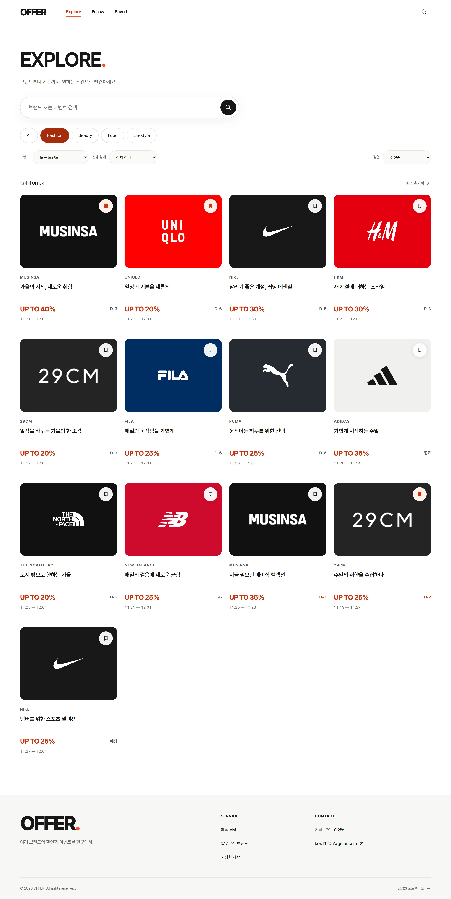
브랜드명이나 이벤트명으로 검색하면 결과가 입력한 내용에 맞춰 갱신됩니다.
카테고리, 브랜드, 진행 상태를 조합해 후보를 좁힙니다.
추천·최신 등록·마감 임박·최대 할인율 순으로 정렬합니다.
카드마다 브랜드·혜택·기간을 같은 순서로 표시합니다. 관심 혜택은 탐색 중 북마크로 저장할 수 있습니다.
필요한 혜택 정보는 명확하게, 선택은 간편하게.
프로모션의 혜택과 기간을 우선 읽을 수 있게 배치하고, 아래에서 타임라인과 이용 조건을 확인하도록 연결했습니다.
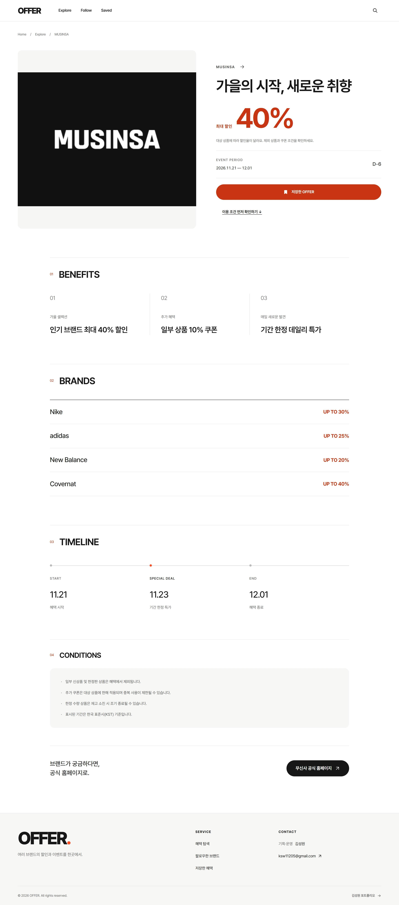
브랜드와 행사명 아래 최대 할인과 이용 기간을 먼저 보여주고 타임라인으로 이어집니다.
브랜드 팔로우와 별개로 개별 혜택만 저장합니다.
제외 항목과 사용 조건을 상세에서 확인하고, 상단에서 조건으로 바로 이동할 수 있습니다.
혜택과 조건을 확인한 뒤 브랜드 공식 홈페이지로 이동합니다.
좋아하는 브랜드의 새로운 혜택을 한곳에서.
관심 브랜드와 해당 브랜드의 진행 중인 프로모션을 한 화면에서 확인합니다.
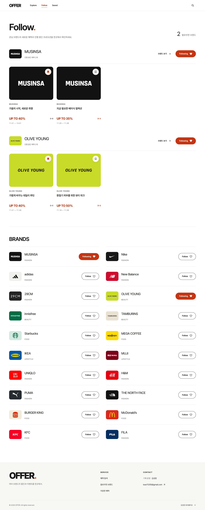
하트와 Following으로 관심 브랜드 상태를 파악하고 브랜드 상세로 이동합니다.
팔로우한 브랜드의 진행 중 혜택과 개별 프로모션 카드를 함께 확인합니다.
팔로우로 관심 브랜드를 관리하고, 이용할 혜택은 북마크로 개별 저장합니다.
관심 브랜드의 모든 혜택을 한눈에.
브랜드의 로고와 컬러로 정체성을 드러내고, 혜택은 같은 정보 구조로 보여줘 탐색의 기준을 유지했습니다.
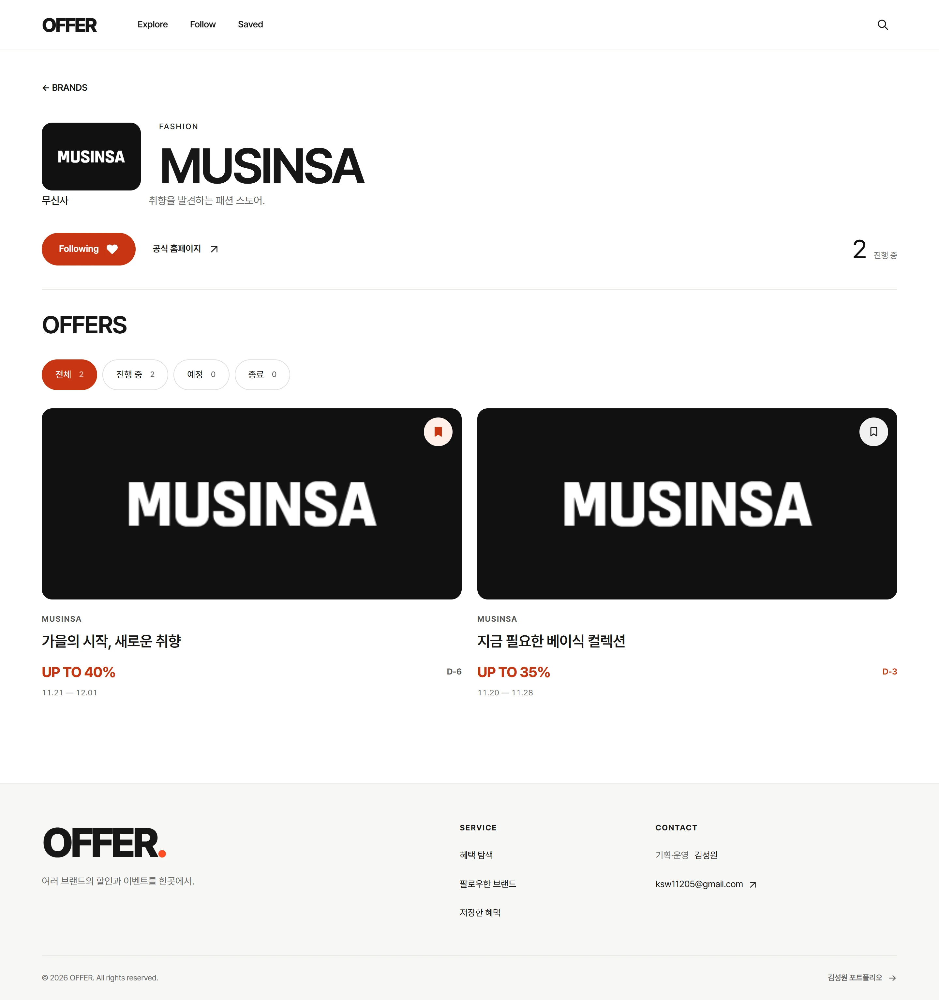
로고와 브랜드 컬러로 해당 브랜드의 정체성을 먼저 보여줍니다.
상세에서 브랜드 팔로우 여부를 확인하고 바로 바꿀 수 있습니다.
해당 브랜드의 혜택을 상태별로 보고 개별 프로모션을 선택해 저장합니다.
저장한 혜택, 이제 일정까지 한눈에.
저장한 혜택을 목록과 월간 캘린더로 확인하며, 이용 기간과 마감일을 관리할 수 있도록 했습니다.
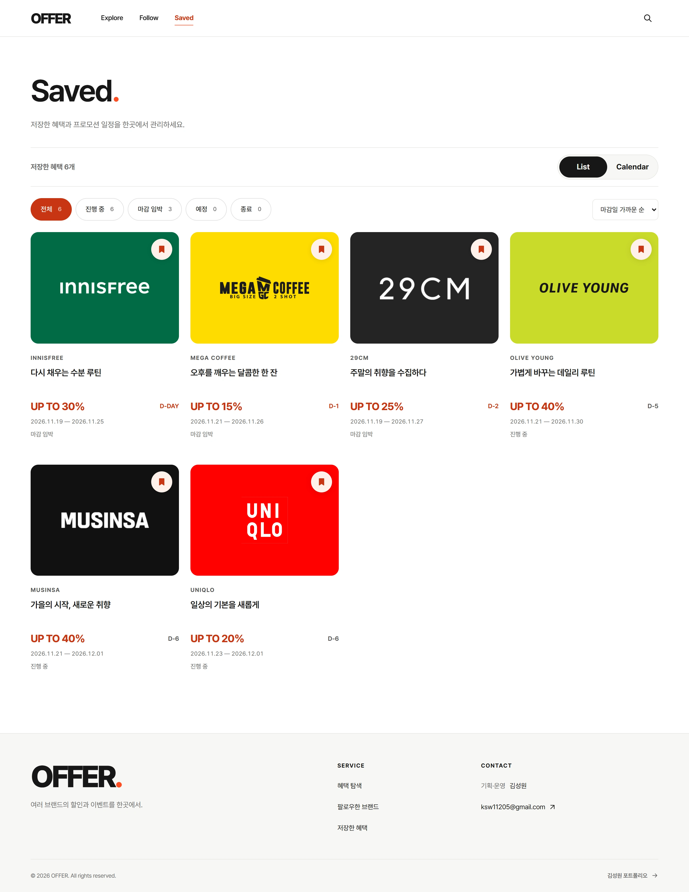
저장한 혜택을 한곳에서 확인하고, 북마크를 다시 눌러 저장을 해제할 수 있습니다.
같은 저장 혜택을 목록과 월간 캘린더로 전환해 확인합니다.
할인, 이용 기간, 남은 일수를 비교하고 마감일 기준으로 정렬합니다.
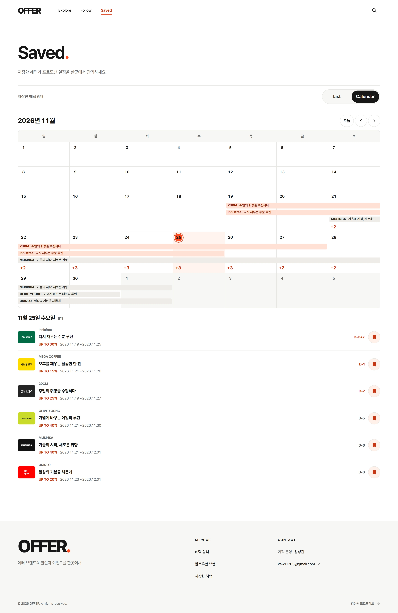
시작일부터 종료일까지 막대가 이어집니다. 겹친 일정은 +N으로 확인합니다.
날짜를 선택하면 그날 이용할 수 있는 혜택이 캘린더 아래에 표시됩니다.
선택한 혜택의 종료일과 D-DAY를 확인하고 상세 이동이나 저장 해제를 할 수 있습니다.
RESPONSIVE WEB
데스크톱부터 모바일까지, 화면 크기에 맞춰 혜택 탐색 경험을 유연하게 재구성했습니다.
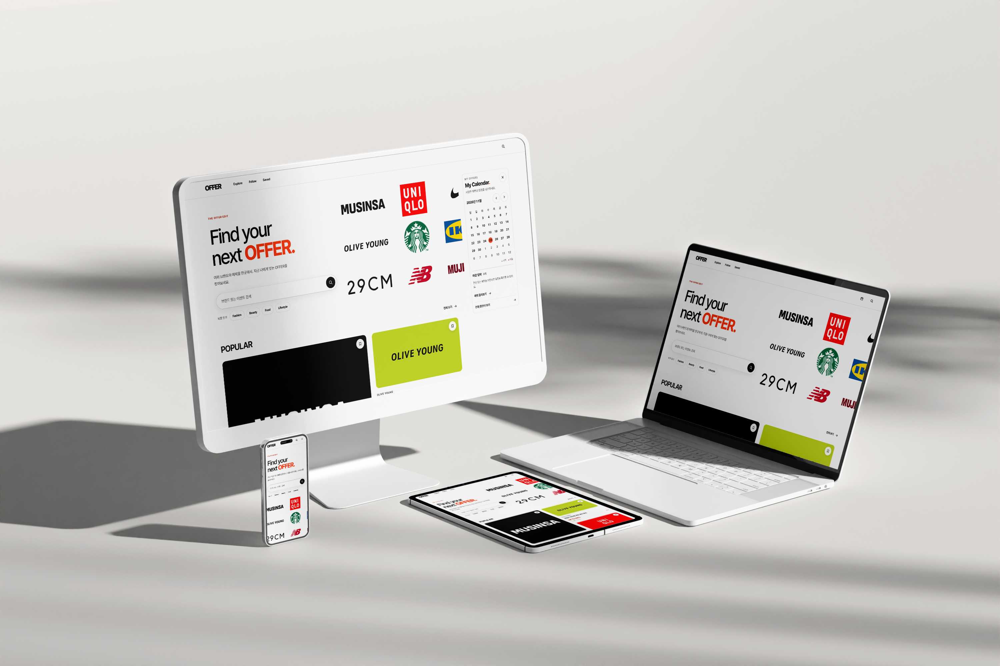
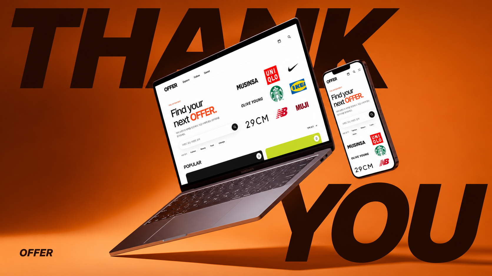